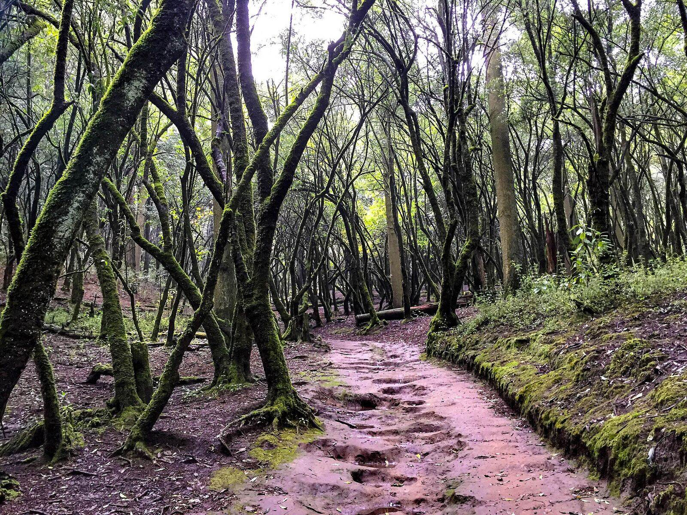
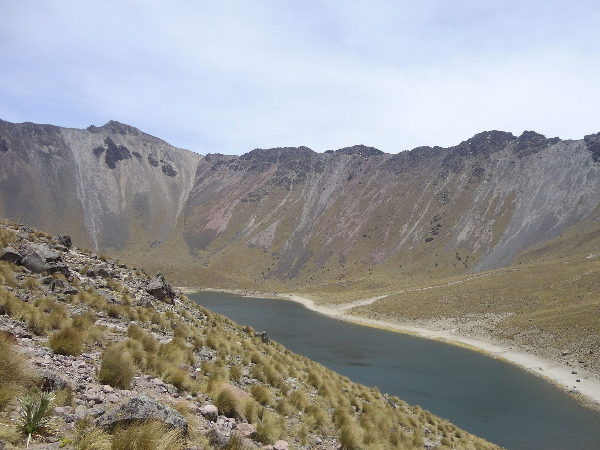
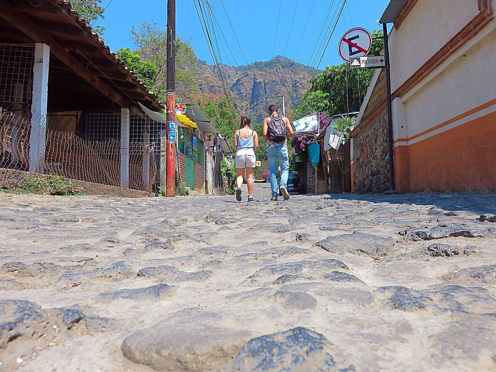
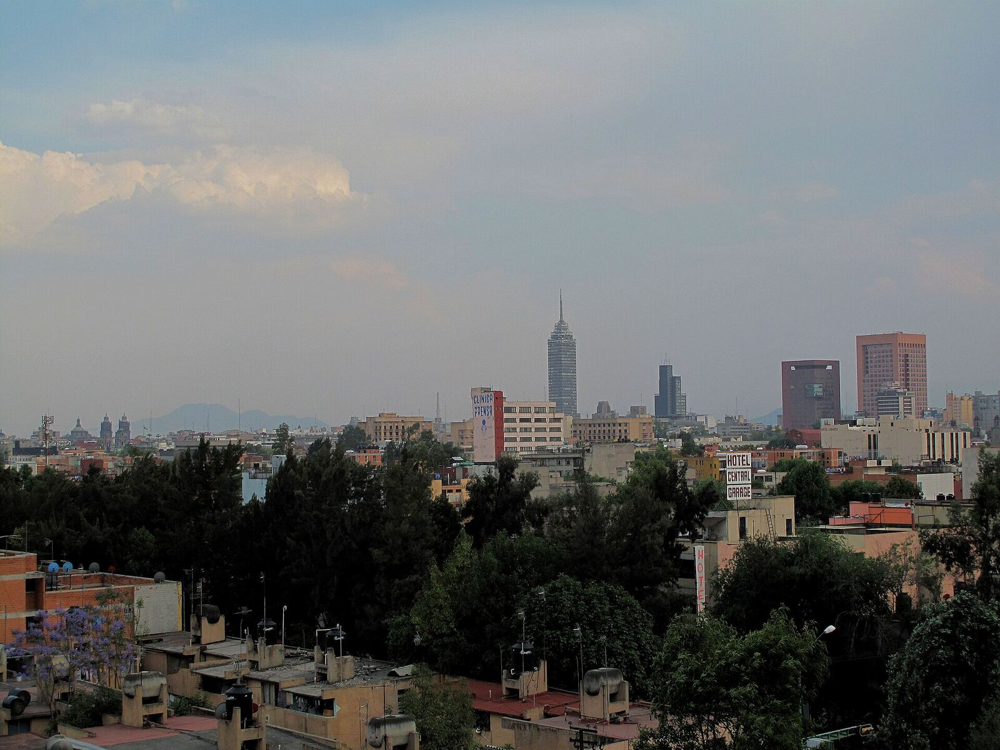
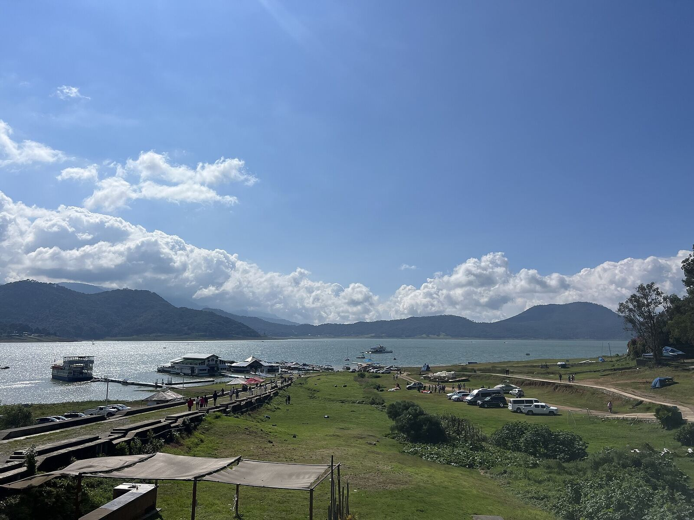
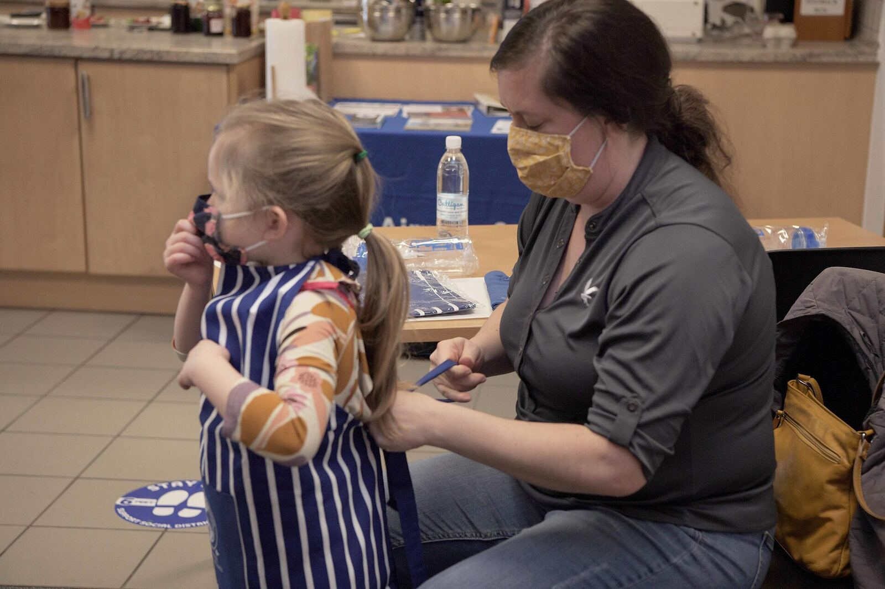
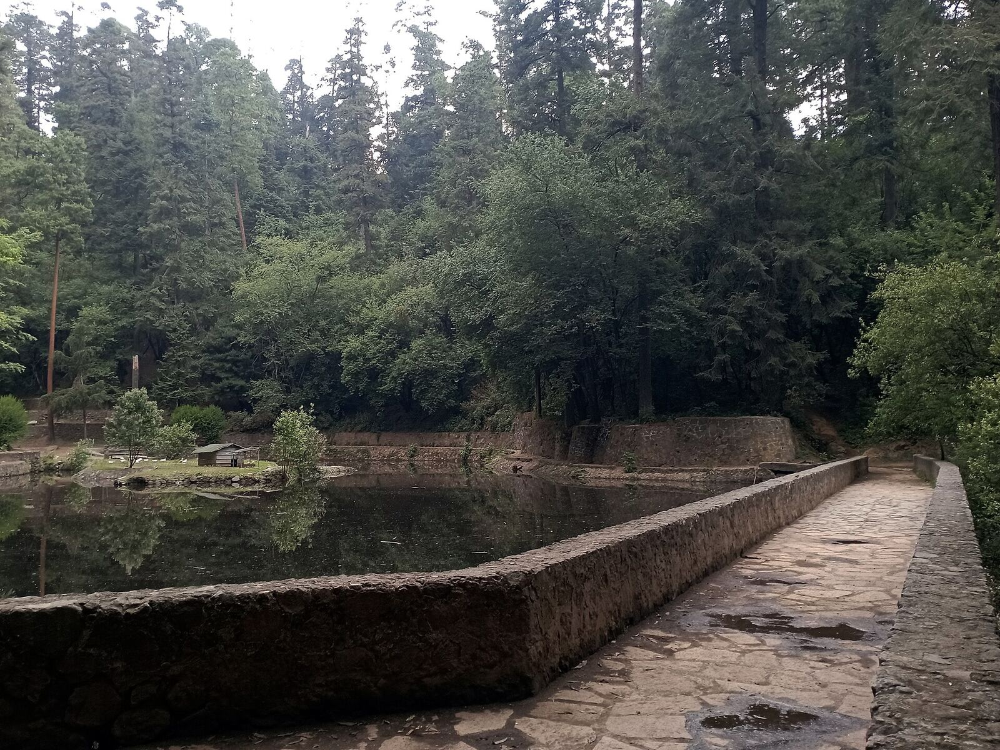

See what you’ve stopped seeing.
UNBLOCK diseña experiencias para personas y organizaciones que crean una pausa, cambian la perspectiva y hacen visible algo que desde adentro puede ser difícil de ver.
A veces no necesitamos hacer más.
Necesitamos mirar diferente.
Diseñamos espacios para salir de lo automático, observar desde otra perspectiva y abrir nuevas posibilidades.

Podemos cambiar de rutina, estrategia, equipo, relación o proceso y seguir llegando al mismo lugar.
A veces no porque la solución haya fallado, sino porque seguimos respondiendo desde algo que ya dejamos de ver.

Ahí empieza UNBLOCK: en el momento en que algo se vuelve visible otra vez.
¿Cómo quieres vivir UNBLOCK?

Para mí
Caminatas, retreats, workshops, constelaciones y experiencias para salir del ruido cotidiano y observar tu vida desde otro lugar.
- Slow MorningHike, fotografía y presencia en la naturalezaUna mañana
- Slow WeekendUna noche fuera de la rutinaUna noche
- Slow RetreatBajar el ruido y observar con más profundidadDos noches
- ConstelacionesWorkshops grupales para observar patrones3 o 4 sesiones
- RetirosConstelaciones, naturaleza e integraciónInmersivo
Para mi empresa
Experiencias diseñadas alrededor del momento real de una organización, en Ciudad de México y otros destinos de México.
- Team BuildingCon propósito, nunca de catálogoEquipos
- OffsitesSalir de la oficina para pensar distintoEquipos
- Leadership ExperiencesPara nuevos y actuales liderazgosLiderazgo
- Constelaciones organizacionalesLo que el organigrama no cuentaSistémico
- Family DaysPara colaboradores y sus familiasEventos
- Eventos 360Concepto, venue, producción y logísticaEventos
- Fiestas de fin de añoCerrar el año con una memoriaEventos
Servicios destacados
Diseñamos team buildings    
Cada formato empieza por la misma pregunta: ¿qué queremos que las personas vivan aquí?
Your team doesn’t need another activity.
It needs the right experience for this moment. Elige lo que está viviendo tu equipo hoy.
Team Building con propósito
Para un equipo que todavía no se conoce fuera del trabajo. Pintura, cocina, naturaleza o conversación: el formato se elige por lo que el equipo necesita vivir, no por catálogo.
Diseñar una experiencia para mi equipoOffsite con constelación organizacional
Para un equipo atravesando un cambio. Salimos del día a día y observamos las relaciones y posiciones que el organigrama no muestra.
Diseñar una experiencia para mi equipoCapacitación, cultura y colaboración
Para un equipo que creció rápido. Experiencias que ponen en práctica cómo trabajar juntos cuando ya no caben en la misma mesa.
Diseñar una experiencia para mi equipoLeadership Experience
Para quien empieza a liderar o lidera de otra forma. Ejecución, comunicación, influencia y manejo de conflictos, vividos y no solo explicados.
Diseñar una experiencia para mi equipoExperiencia colaborativa a la medida
Para observar y fortalecer los comportamientos cotidianos de colaboración, con una actividad que los hace visibles.
Diseñar una experiencia para mi equipoIntervención sistémica para equipos
Para una tensión que se repite. Constelaciones organizacionales para ver la dinámica desde fuera; no sustituyen el análisis estratégico, añaden otra perspectiva.
Diseñar una experiencia para mi equipoOffsite de alineación
Para un equipo que necesita mirar en la misma dirección. Tiempo fuera, preguntas claras y una experiencia que deja acuerdos concretos.
Diseñar una experiencia para mi equipoKickoff
Para arrancar un año, un proyecto o una estructura nueva con la energía y la claridad correctas desde el primer día.
Diseñar una experiencia para mi equipoThings we’ve already made happen:
Liderazgo estratégico para supervisores
Diseño y facilitación de una experiencia enfocada en ejecución, comunicación, influencia y manejo de conflictos.
What it feels like to work with us.
“Es de esasexperienciasque siguespensandodías después.”
“Dani no llega con soluciones genéricas: escucha, entiende el contexto y diseña experiencias e intervenciones pensadas específicamente para lo que el equipo necesita.”
Greg Guida, Sr. Director, Etsy
“Vernos desde nuestra faceta humana nos ayudó a conectar, compartir experiencias personales y generar una confianza real para nuestro día a día.”
Sara Noemí Cervera Soto, Científica de Datos, Círculo de Crédito
What are you ready to see differently?
Empezamos con una conversación sobre lo que estás imaginando.